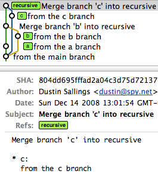
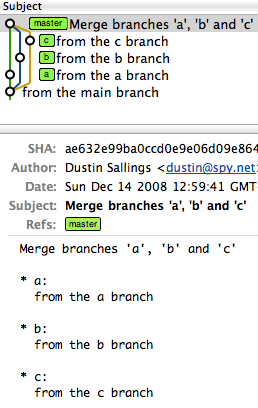

When would you use the different git merge strategies?
From the man page on git-merge, there are a number of merge strategies you can use.
-
resolve - This can only resolve two heads (i.e. the current branch and another branch you pulled from) using 3-way merge algorithm. It tries to carefully detect criss-cross merge ambiguities and is considered generally safe and fast.
-
recursive - This can only resolve two heads using 3-way merge algorithm. When there are more than one common ancestors that can be used for 3-way merge, it creates a merged tree of the common ancestors and uses that as the reference tree for the 3-way merge. This has been reported to result in fewer merge conflicts without causing mis-merges by tests done on actual merge commits taken from Linux 2.6 kernel development history. Additionally this can detect and handle merges involving renames. This is the default merge strategy when pulling or merging one branch.
-
octopus - This resolves more than two-head case, but refuses to do complex merge that needs manual resolution. It is primarily meant to be used for bundling topic branch heads together. This is the default merge strategy when pulling or merging more than one branches.
-
ours - This resolves any number of heads, but the result of the merge is always the current branch head. It is meant to be used to supersede old development history of side branches.
-
subtree - This is a modified recursive strategy. When merging trees A and B, if B corresponds to a subtree of A, B is first adjusted to match the tree structure of A, instead of reading the trees at the same level. This adjustment is also done to the common ancestor tree.
When should I specify something different than the default? What scenarios are each best for?
Answer
I'm not familiar with resolve, but I've used the others:
Recursive
Recursive is the default for non-fast-forward merges. We're all familiar with that one.
Octopus
I've used octopus when I've had several trees that needed to be merged. You see this in larger projects where many branches have had independent development and it's all ready to come together into a single head.
An octopus branch merges multiple heads in one commit as long as it can do it cleanly.
For illustration, imagine you have a project that has a master, and then three branches to merge in (call them a, b, and c).
A series of recursive merges would look like this (note that the first merge was a fast-forward, as I didn't force recursion):

However, a single octopus merge would look like this:
commit ae632e99ba0ccd0e9e06d09e8647659220d043b9 Merge: f51262e... c9ce629... aa0f25d...

Ours
Ours == I want to pull in another head, but throw away all of the changes that head introduces.
This keeps the history of a branch without any of the effects of the branch.
(Read: It is not even looked at the changes between those branches. The
branches are just merged and nothing is done to the files. If you want to
merge in the other branch and every time there is the question "our file
version or their version" you can use git merge -X ours)
Subtree
Subtree is useful when you want to merge in another project into a subdirectory of your current project. Useful when you have a library you don't want to include as a submodule.
Suggest
Actually the only two strategies you would want to choose are ours if you want to abandon changes brought by branch, but keep the branch in history, and subtree if you are merging independent project into subdirectory of superproject (like 'git-gui' in 'git' repository).
octopus merge is used automatically when merging more than two branches. resolve is here mainly for historical reasons, and for when you are hit by recursive merge strategy corner cases.